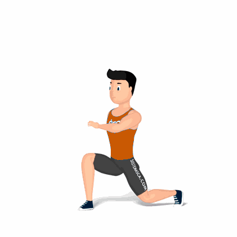

Lunge com Salto

Complexo e com uma carga extra de queima calórica, a lunge com salto é mais um dos exemplos de exercícios para pernas que trabalham diversos grupos musculares e ainda exigem uma dose de equilíbrio e consciência abdominal para realizá-lo.
Ficha Técnica
Tipo: Funcional
Grupo Muscular: Perna
Aparelho: Nenhum
Músculos: Nenhum
Como realizar
- Coloque-se em pé, com a postura ereta e pés paralelos aos ombros;
- Dê um largo passo com sua perna direita à frente e agache, de modo que ambas as pernas formem um ângulo de 90 graus e a coluna se mantenha reta;
- Sinta os músculos trabalhando e, ao agachar, faça com que o joelho que estiver atrás quase toque o solo;
- Logo em seguida, leve a perna que estiver atrás para frente, elevando o joelho até a altura do peito, saltando com a perna oposta simultaneamente;
- Após o salto, retorne a perna esquerda à posição inicial, aproximando levemente o joelho em direção ao solo e saltando novamente, até que todos movimentos sejam realizados;
- Repita toda a sequência com a perna oposta.
 RC STORE
RC STORE